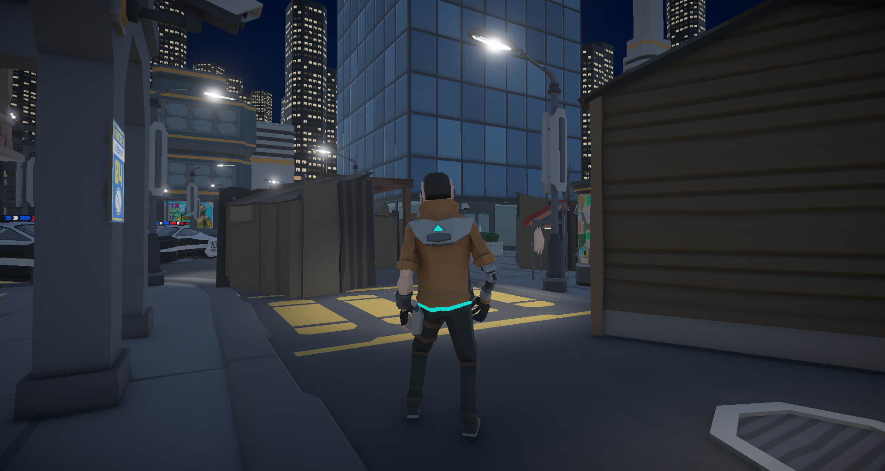
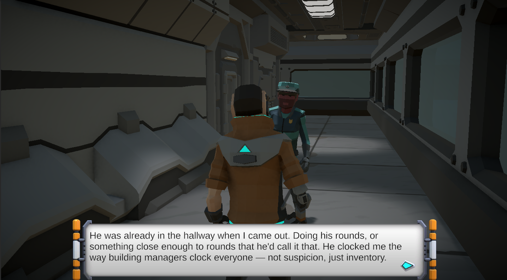
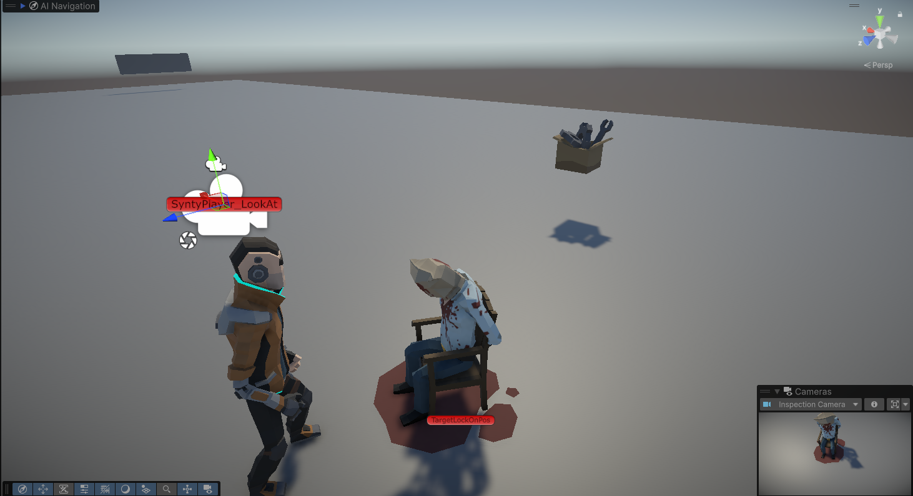

A neo-noir murder mystery. One suspect. Nine clues. Three endings. Built in Unity + Ink.

Project Dunwell is my latest shipped title, designed as a neo-noir sci-fi murder mystery I built in Unity with Ink handling all the branching dialogue. You play Marcus Dunwell, not a detective, but an engineer who will find himself as the prime suspect. Summoned by the victim for Dunwell's history in infrastructure, each piece of evidence has his name and fingerprints on it, all captured with a surveillance system he designed.
Project Dunwell was a medley of new challenges for me. From truly designing the whole world, aesthetic, game feel, down to the minute details of writing the story. I think the true challenge was learning to fire the proper Ink knot with the correct timing, which meant if a clue was discovered, the script would play and I'd need to recognize where the story had to pick back up from. Then it becomes how do I avoid interruptions, how can I cut blank lines that arise from tagging knots in Ink, and how can I avoid repeating the same monologue script or line to avoid losing the linear story. Learning Ink was something in of itself too which included learning its language, the syntax and grammar of how to properly code what I wanted the story to tell.
Dunwell needed two systems to stay completely decoupled: Unity owning the world — collision, player state, clue tracking — and Ink owning all narrative output. The challenge was making them talk to each other without either one knowing too much about the other. Specifically: how do you fire a narrative knot from a collision trigger without interrupting story state? How do you pass game events into Ink without hardcoding them? And how do you suppress the blank lines Ink outputs between logic-only lines so nothing bleeds into the UI? These aren't theoretical problems. They blocked progress until the architecture was right.


The answer was building an InkBridge right into my GameManager.cs — a custom messenger layer sitting between Unity and Ink. Working with this new system for dialogue and narrative application, my natural instinct was to brush up on their documentation. However with this documentation, I found that the tests I was running in the compiler weren't one hundred percent accurate with what was supposed to be helping me understand its features. Reiterative tests, gate building in C# with Unity to advance the dialogue along became my source of truth. If I fire this knot, based on this object's script variable, and only when I collide with this clue, should this line of the story appear.
Unity calls knots by name when triggers fire. Ink delivers text and tags. The game manager reads those tags and fires Unity events in response: updating UI, triggering fades, locking the case board during critical beats, enabling the building manager encounter. Neither system reaches into the other directly.
public void AdvanceDialogue()
{
if (_inkStory.canContinue)
{
string line = _inkStory.Continue().Trim();
// Skip blank lines automatically
if (string.IsNullOrWhiteSpace(line))
{
AdvanceDialogue();
return;
}
typeWriter._readyForNewText = true;
typeWriter.PrepareForNewText(dialogue);
dialogue.transform.GetChild(1).GetComponent().text = line;
//_inkStory.Continue();
dialogue.SetActive(true);
List tags = _inkStory.currentTags;
foreach (string tag in tags)
{
if (tag.StartsWith("SCENE_"))
{
string sceneName = tag.Substring(6); // Extract the scene name after "SCENE_"
// Load the scene using SceneManager.LoadScene(sceneName);
Debug.Log("Scene change triggered: " + sceneName);
AdvanceDialogue(); //UI will produce a blank line, so we need to advance the dialogue again to skip it
}
if (tag.StartsWith("CONVO_"))
{
AdvanceDialogue();
dialogue.SetActive(false);
// Load the scene using SceneManager.LoadScene(sceneName);
manager.GetComponent().Restore();
Debug.Log("Conversation is Done ");
//ui will produce a blank line, so we need to advance the dialogue again to skip it
continue;
}
if (tag.StartsWith("CLUE_"))
{
string clueName = tag.Substring(0); // Extract the clue number after "CLUE_"
// Load the scene using SceneManager.LoadScene(sceneName);
Debug.Log("Clue found triggered: " + clueName);
}
}
}
else
{
dialogue.SetActive(false);
}
}
Other challenges that arose included Clue collection, inspection, clue card creation, connection mapping and how the story reacts to each. Now during clue collection, the first thing that had to be decided was what's important to the case, what's just world design and lore, and what's just junk someone in this world might just glance at. Using booleans to flag case-relevant objects versus world dressing, and item titles to surface context helped track what to tell the player about Sificity, and what Dunwell's behavior could reveal. Once a relevant clue to the case was found though, it was up to the player to see what connections they could draw on the caseboard to help unveil more of what happened in this locked room mystery. For me, finding the clues, making the connection and further discovering the story made building the rest of the game a lot more engaging and fun to work on.
What worked, and what I'd do differently.